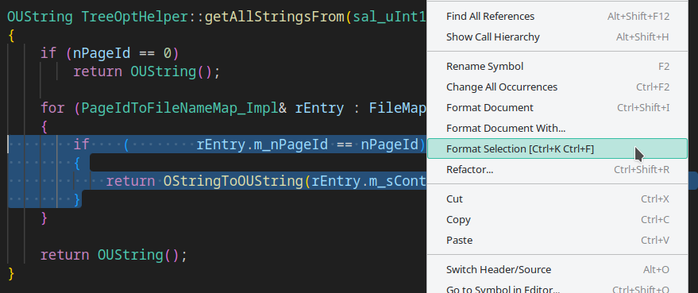

How to clang-format LibreOffice code-base only for selected code piece(s) - VSCode
According to https://wiki.documentfoundation.org/Development/clang-format:
$ wget https://dev-www.libreoffice.org/bin/clang-format-5.0.0-linux64
$ chmod +x clang-format-5.0.0-linux64
$ sudo mkdir -p /opt/lo/bin/
$ sudo cp clang-format-5.0.0-linux64 /opt/lo/bin/clang-formatThen, to reformat the whole file:
$ /opt/lo/bin/clang-format -i path/to/thefile.cxxWe can reformat a file easily. But what if we want to do clang-format only for a specific code-piece(s) (e.g. a function, class, if-else …) instead?
On VSCode (Linux):
File>Preferences>Settings.- Search for
clang-format. - in
C_Cpp: Clang_format_pathsection, set the path of the clang-format executable as/opt/lo/bin/clang-format.
For example, let’s only select the if statement here:
...
for (PageIdToFileNameMap_Impl& rEntry : FileMap_Impl)
{
if ( rEntry.m_nPageId == nPageId)
{
return OStringToOUString(/*...*/);
}
}
...
Then right click on the selection and select Format Selection:

Finally, formatting only for if statement should work:
...
for (PageIdToFileNameMap_Impl& rEntry : FileMap_Impl)
{
if (rEntry.m_nPageId == nPageId)
{
return OStringToOUString(/*...*/);
}
}
...